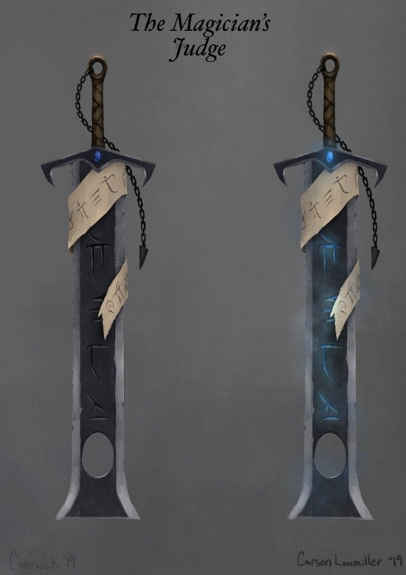
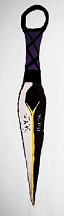

WEAPONS

THE MAGICIAN'S JUDGE
Stats:
IN DEVELOPMENT
Lore:
TODO

KUNAI OF TELEPORTATION
Stats:
This Kunai has 2 charges. If thrown, the user teleports to where the kunai collides with another object (includes both world and creatures). Deals 5 piercing damage on hit.
Lore:
TODO